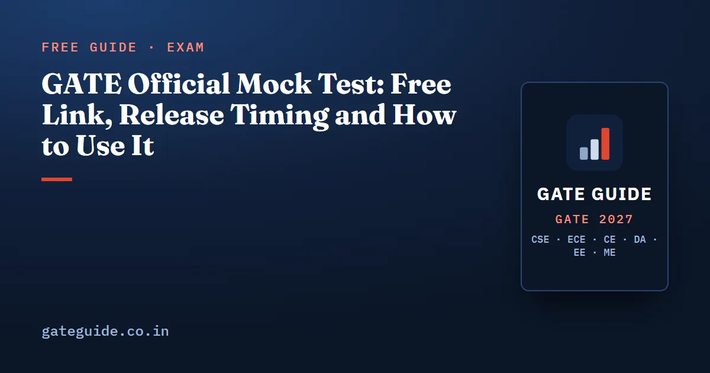

GATE Official Mock Test: Free Link, Release Timing and How to Use It

The official GATE mock test is a free practice copy of the real exam screen, published by the organising institute for every test paper. For GATE 2027 that institute is IIT Madras, and the brochure says the mock links will appear on the official website. This guide explains what the mock is, where and roughly when it appears, how to sit it like the real paper, and what it can and cannot tell you.
In this guide
Key takeaways
- The official mock test is a practice run of the computer-based test interface, one per paper. It is free and published on the official GATE website.
- The GATE 2027 brochure says mock examination links and the virtual scientific calculator will be accessible through the official website. On 9 October 2026 no link was live yet.
- In past cycles the links appeared some months before the February exam. Check the current notification for the 2027 date.
- The mock is not evaluated and gives no score. It teaches the screen, not the difficulty of your paper.
- Sit it in one timed 180-minute block, with only the on-screen calculator and one sheet for rough work.
- Use it to test a time budget: about 1.6 minutes per mark leaves 20 minutes for a final review.
What the official mock test actually is
Every GATE 2027 paper is a computer-based test (CBT): questions appear on a screen and you answer with the mouse. The official mock test is a sample paper loaded into that same screen, so you can see the layout before the day. It is made by the organising institute, not by a coaching site.
A few terms recur in this guide. The question palette is the side panel of question numbers that shows which you have answered, skipped or marked. The virtual calculator is the scientific calculator on screen, the only calculator the brochure allows. The scribble pad is the paper the invigilator gives you for rough work. The brochure says you may hold only one pad at a time and must return it before taking the next.
The mock is set up per paper. In the GATE 2026 cycle, the official page listed one link for each test paper code, from Aerospace to the Humanities papers. So a Civil candidate practises on a Civil mock, and an Electrical candidate on an Electrical one.
In one line: the official mock is a rehearsal of the exam screen for your own paper code, made by the people who run the exam.
Where the link appears and when it usually goes live
The GATE 2027 Information Brochure states that the syllabus, previous question papers and mock examination links, together with the virtual calculator, will be accessible through the official website. The official site is gate2027.iitm.ac.in. When we checked it on 9 October 2026, its menus and download page showed the brochure and past papers but no mock link yet.
Past cycles give a rough idea of timing, not a promise. The table records only what could be confirmed.
| Cycle | Organising institute | What is on record |
|---|---|---|
| GATE 2025 | IIT Roorkee | Careers360 and Amar Ujala, both dated 27 October 2024, reported the mock links live on gate2025.iitr.ac.in |
| GATE 2026 | IIT Guwahati | A "Mock Test Links" page on gate2026.iitg.ac.in, one link per paper, under the GATE Papers menu |
| GATE 2027 | IIT Madras | Promised in the brochure; no link live on 9 October 2026 |
So the link has tended to arrive a few months before the exam, which for 2027 runs from 6 to 21 February. The month varies by institute, so check the current notification on the official site. The GATE 2027 exam dates guide lists every other official deadline.
How you open the mock has also varied. Follow the instructions printed on the 2027 page itself, and use only links found on the official site.
Trap: third-party "official mock" pages sometimes run their own clone of the interface. A clone can behave differently, especially the calculator. Start from gate2027.iitm.ac.in and follow its link.
What the mock tells you, and what it does not
The GATE 2026 mock page was candid about its limits. It said the links help candidates get used to the look and feel of the test. It also said the features of the real exam may differ from the static mock, and that the mock does not indicate the topics in the real paper. The mix of MCQ, MSQ and NAT questions may differ too, and the answers are not evaluated.
| The mock does tell you | The mock does not tell you |
|---|---|
| How the palette, buttons and review marks look | How hard your actual paper will be |
| How to enter a NAT value and select MSQ options | Which topics will be asked |
| How the virtual calculator behaves | Your score, rank or likely GATE score |
| How the timer and section switching appear | The real ratio of MCQ, MSQ and NAT |
The right attitude is simple. Treat the official mock as a driving lesson in the real car, not as a forecast of the road. For difficulty, use the official previous year papers of your branch, which the GATE 2027 download page carries with answer keys. For how a raw mark becomes a GATE score, read how the GATE score is calculated.
How to sit the mock like the real paper
A mock taken casually teaches you very little. The brochure fixes the real conditions: three hours, the on-screen calculator only, one scribble pad at a time, and no leaving the hall before the end. Copy them.
- Book three quiet hours at the clock time of your own session. Phone in another room.
- Read the instruction screens first. On the day you may log in and read them 20 minutes before the start. Use the mock to learn them now.
- Start a timer for 180 minutes and do not pause it. The paper closes itself when time runs out.
- Use only the virtual calculator. No phone, no desk calculator. The virtual calculator guide covers the key order and memory keys.
- Keep one sheet of rough paper. Write your name on it, as you will on the real pad. No formula sheet, no notes.
- Work every section to the end, then use the review marks to make a second pass.
If you are eligible for compensatory time, the brochure allows up to four hours. Practise with the duration that applies to you.
A time budget to test on the mock
Every GATE paper has 65 questions for 100 marks, all worth 1 or 2 marks each. That fixes how many of each there are. Call the 1-mark questions and the 2-mark questions . Count questions, then count marks:
Now hold back 20 minutes for a final review. The remaining 160 minutes spread over 100 marks give a rate in minutes per mark:
So a 1-mark question gets about 1.6 minutes and a 2-mark question about 3.2 minutes. Check that it adds up:
General Aptitude carries 15 marks in every paper, so its share is minutes. A useful checkpoint follows: after 60 minutes you should have worked through about marks of questions. This is an example budget, not an official rule. The mock is where you find out whether it suits you.
Remember: a budget is only useful if you check it mid-paper. Glance at the timer at 60 and 120 minutes and compare with your plan.
The usual trap is a single stubborn 2-mark question that eats ten minutes. If a question passes double its budget, mark it for review and move on. The General Aptitude preparation guide shows how to keep those 15 marks quick.
A checklist for your first sitting
Before you start:
- Open the mock from the official site, for your own paper code.
- Read every instruction screen, and note the button names.
- Have one blank sheet and a pen ready. Nothing else on the desk.
While you sit it:
- Enter at least one NAT answer and one MSQ answer, then clear and re-enter one.
- Mark a question for review and find it again in the palette.
- Do at least three calculations on the virtual calculator.
- Check the timer at 60 and 120 minutes against your budget.
Afterwards:
- Write down anything on the screen that surprised you.
- Note where you lost time: reading, calculating or switching questions.
- Plan your next full-length timed paper in the same conditions.
Quick revision
- The official mock is free, made by the organising institute, and set up one per paper.
- For 2027, the brochure says the link will appear on gate2027.iitm.ac.in. Check the current notification for its date.
- The mock teaches the screen. It does not predict difficulty, topics or your score.
- Sit it for a full 180 minutes, with the virtual calculator and one rough sheet only.
- A paper has 30 one-mark and 35 two-mark questions, since 65 questions make 100 marks.
- About 1.6 minutes per mark leaves 20 minutes to review. GA takes about 24 minutes.
- Use only links from the official site. Clones can behave differently.
GATE Guide is an independent site and is not connected to IIT Madras or the GATE office. Treat gate2027.iitm.ac.in as final on every date and rule above. Each GATE 2027 book on this site includes ten full mock tests for its own paper, with worked solutions, so you can score yourself after the official mock has taught you the screen. See the books for every branch.
Frequently asked questions
Is the official GATE mock test free?
Yes. The organising institute publishes the mock test links on the official GATE website, alongside the syllabus and previous question papers, and no separate fee has been charged for them in past years. For GATE 2027 the information brochure says the mock examination links will be accessible through the official website run by IIT Madras.
When will the GATE 2027 mock test be released?
No date has been announced. On 9 October 2026 the official GATE 2027 website showed no mock test link. In the GATE 2025 cycle, news reports dated 27 October 2024 said the organising institute had activated its mock links, but the timing changes from year to year. Check gate2027.iitm.ac.in and its notices for the current date.
Where can I find the GATE 2027 mock test link?
On the official GATE 2027 website, gate2027.iitm.ac.in, once it is published. In the GATE 2026 cycle the links sat on a page called Mock Test Links under the GATE Papers menu, with one link per test paper. The 2027 layout may differ, so use only the official site and avoid copies hosted elsewhere.
Does the official GATE mock test give a score?
No. The GATE 2026 mock test page stated that mock answers are not evaluated and that no score card is generated. The official mock exists so you can learn the look and feel of the computer-based test. To score yourself, sit a full-length paper in the same pattern and mark it with the official negative marking scheme.
Is the official mock test as hard as the real GATE paper?
Do not read it that way. The GATE 2026 mock page said the mock is not an indication of the topics in the real exam, and that the mix of MCQ, MSQ and NAT questions may differ. Treat it as interface practice. Judge difficulty from the official previous year papers of your own branch instead.
Sources
- GATE 2027 official website (IIT Madras)
- GATE 2027 Information Brochure (official PDF)
- GATE 2027 downloads, previous question papers and answer keys (official)
- GATE 2026 mock test links page (official, IIT Guwahati)
- Careers360, GATE 2025 mock test link active at gate2025.iitr.ac.in
- Amar Ujala, GATE 2025 mock test link activated at gate2025.iitr.ac.in
Dates, fees and the syllabus are set by the GATE 2027 organising institute and can change. Always confirm at gate2027.iitm.ac.in.